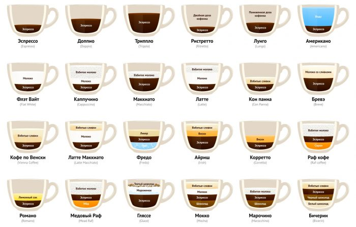

Виды кофе с молоком
Дальше мы коротко перечислим кофейные напитки с молоком. Подробные рецепты кофе, а также о том как готовить разные виды, вы узнаете перейдя по ссылкам в названиях.
Макиато (it. Macchiato, Piccolo late, fr. Cafe noisette) – шот эспрессо с небольшой дозой вспененного молока. Пенка буквально на мизинец покрывает поверхность кофе. Некоторые рецепты указывают еще меньший объем пенки (15мл), которую кладут чайной ложечкой по центру эспрессо.
Кофе с молоком (it. Caffè latte, fr. Café au lait) – домашний напиток, который туристам часто приносят вместо Латте. В Польше называется Kawa biała (белый кофе), в Австрии – Меланж, по-французски произносится “кафэ-о-ле”, в Нидерландах Koffie verkeerd (неправильный кофе).
Капучино (it. Cappuccino, fr. Café crème) – эспрессо со вспененным молоком. Название происходит от ит. слова “капуцин” – отсылка к характерному красно-коричневому цвету роб у монашеского ордена капуцинов. В отличие от латте, подается, как и эспрессо, в предварительно прогретой кофейной чашке на 150–180 мл. Если сравнивать латте и капучино – молока больше в латте, о нём дальше.
Кубинский кофе (также кофе по-кубински) – готовят с использованием тростникового сахара. Для приготовления принято использовать более темную обжарку и двойную закладку (14–15 г). Заваривают как эспрессо, но в чашку предварительно кладут ~20 г сахара, за счет чего горячий кофе интенсивнее раскладывает сахар на составляющие создавая более крепкий, густой и сладкий напиток.
Самые популярные виды кофе
Среди всего этого многообразия кофейных напитков существуют и свои любимчики, которых заказываю чаще всего.
- Эспрессо
- Капучино
- Американо
- Латте
- Фраппе
- Кофе с молоком
- Кофе со льдом
- Кофе по-ирландски
- Кофе по-турецки
- Юаньян
Естественно, рейтинг кофейных напитков отличается от страны к стране и от дома к дому. Например, итальянцы в домашних условиях готовят в гейзерной кофеварке. По утрам они предпочитают пить кофе с молоком, причем кофе доливают в чашку с уже теплым молоком, а не наоборот.
Большинство парижан по утрам пьют эспрессо в заведении. Немцы страстно влюблены в молотый кофе (например вот такой), и предпочитают заваривать его дома через фильтр-пакеты. Скандинавы пристрастились к пуроверу и капельным методам заваривания. Шведы, те вообще любят kokkaffe (кипяченый кофе) – это когда закипевшую воду заливают в чайник с кофе крупного помола.
Как ни крути, сколько кофеманов – столько и кофейных напитков. Да и Вы наверняка имеет свой секретный напиток. Расскажите о нем в комментариях, поделитесь своим рецептом!